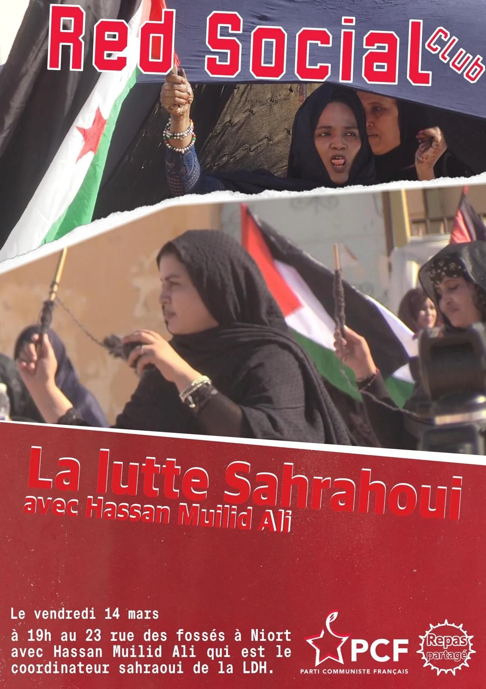

Annonce archivée
Red Social Club à Niort. « La lutte sahraouie » avec Hassan Muilid Ali
Date indiquée par Facebook · 10 mars 2025
Repères éditoriaux
Pour le 14 mars 2025, nous avions invité Hassan Muilid Ali à notre Red Social Club sur la lutte du peuple sahraoui. L’affiche donnait rendez-vous à 19 h au 23 rue des Fossés à Niort et annonçait un repas partagé.
Texte conservé avec la publication
VENDREDI 14 MARS à 19 heures
Red Social Club
La lutte Sahraoui.

Sources
Archive rouge · export Facebook · AR-0002-FB-01174
À lire aussi · Sahara occidental : le Président de la République agit contre le droit international · Le lien d’origine